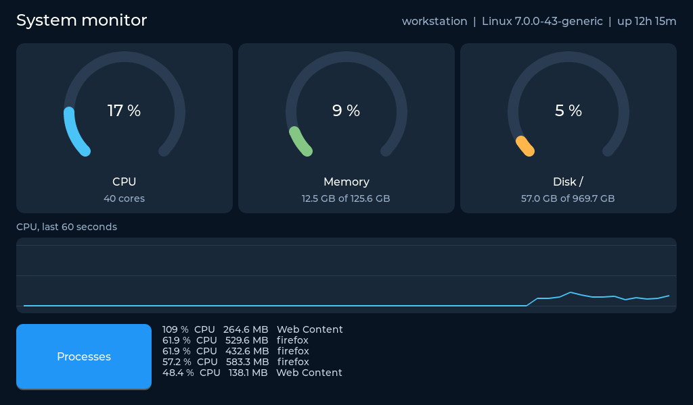

MicroPython on the PC: files, commands and the network¶
MicroPython was made for boards, but on the PC LVGL MPY Studio runs it as the unix port, a real program of the operating system. An application or a program without pages can therefore do on the PC what it cannot do on a board: run commands, read and write any file, open network connections, start threads, call the C functions of a system library.
That makes the simulator and the executables more than a preview: a kiosk on a Linux PC, a test bench that drives instruments from an LVGL panel, a dashboard that reads a log, or the PC side of a board project, written in the same MicroPython.
The example examples/sysmon
is such a dashboard: CPU, memory and disk read from /proc, a chart, and the busiest processes
from ps run through os.system. On a board the same project shows what MicroPython knows there.

Where it works¶
Commands (os.system) |
Files | ffi |
socket |
ssl |
_thread |
termios |
|
|---|---|---|---|---|---|---|---|
| Simulator on Linux, and the folder executable for Linux | yes | yes | yes | yes | yes | yes | yes |
| Single-file executable for Linux | yes | yes | no | yes | no | yes | yes |
| Windows: simulator | yes | yes | no | no | no | no | no |
| In the browser | no | in the page's memory | no | no | no | no | no |
| On a board | no | the flash and the SD | no | depends on the board | depends on the board | depends on the board | no |
On every PC version os also has getenv, putenv, unsetenv, listdir, ilistdir,
mkdir, rmdir, remove, rename, stat, statvfs, chdir and getcwd, and json, re,
hashlib and machine are available. There is no subprocess module.
The single-file executable for Linux is linked statically and leaves out ffi and ssl. The
folder executable and the single-file executable for Windows are built from the same Windows
port as the simulator, but their modules have not been listed one by one.
Examples¶
All of these ran on the Linux runtime of the IDE, MicroPython 1.29.0.
A command and its output. os.system returns the exit code. To read what the command
printed, send it to a file:
import os
def run(command):
out = "/tmp/lms_cmd.txt"
code = os.system(command + " > " + out + " 2>&1")
with open(out) as f:
text = f.read()
os.remove(out)
return code, text
code, text = run("uname -sr")
The output without a temporary file, through ffi and the C function popen (Linux, not in
the single-file executable):
import ffi
libc = ffi.open("libc.so.6")
popen = libc.func("p", "popen", "ss")
pclose = libc.func("i", "pclose", "p")
fread = libc.func("i", "fread", "piip")
def capture(command):
stream = popen(command, "r")
buf = bytearray(4096)
chunks = []
while True:
n = fread(buf, 1, len(buf), stream)
if n <= 0:
break
chunks.append(bytes(buf[:n]))
return pclose(stream), b"".join(chunks).decode()
ffi reaches any function of any shared library in the same way: fork, kill, ioctl, or
the API of a library of your own.
Files, anywhere the user can write:
import os
with open("/home/me/readings.csv", "a") as f:
f.write("22.5\n")
print(os.listdir("/home/me"), os.stat("/home/me/readings.csv")[6]) # size in bytes
A thread and a socket, as in CPython, with the names of MicroPython:
import _thread, socket
def serve():
server = socket.socket()
server.setsockopt(socket.SOL_SOCKET, socket.SO_REUSEADDR, 1)
server.bind(socket.getaddrinfo("0.0.0.0", 8080)[0][-1])
server.listen(1)
while True:
client, _ = server.accept()
client.send(b"HTTP/1.0 200 OK\r\n\r\nhello from LVGL MPY Studio\r\n")
client.close()
_thread.start_new_thread(serve, ())
The threads of the unix port run without a global lock (sys.implementation._thread is
"unsafe"): keep LVGL calls in the main thread and pass data to it, for example through a list
read by an lv.timer.
One program for the PC and for the board¶
sys.platform tells where the program runs: "linux" or "win32" on the PC, "esp32",
"rp2" or "pyboard" (the STM32 port) on a board. Keep the parts that need the operating system behind it:
import sys
ON_PC = sys.platform in ("linux", "win32")
def temperature():
if ON_PC:
return 22.5 # or read a file, a socket, a command
from machine import ADC
return ADC(0).read_u16() * 0.01
Programs without pages¶
Run → Run Program… gives a program without pages the folder of its flash as /, as a board
does: open(), os.listdir() and the other paths of os stay inside it, so /tmp is a folder
of the flash, not the system's. This imitates a board; it is not a barrier: os.system and
ffi still reach the whole system. Programs with pages, and the executables, see the real
filesystem.
Safety¶
An application run in the simulator or as an executable has the permissions of the user who starts it, like any Python script: it can delete files, read keys, open connections. Run only projects and programs you trust, as with code downloaded from anywhere. The IDE does not restrict them.
What has been verified¶
On 14 November 2026 the examples of this page ran on the Linux runtime of the IDE, and the table
was read from the runtimes themselves: the Linux runtime and the single-file one for Linux
natively, the Windows runtime under Wine, which lists its modules as Windows would. os.system
ran on all three. Nothing of this page has been tried on a real Windows.